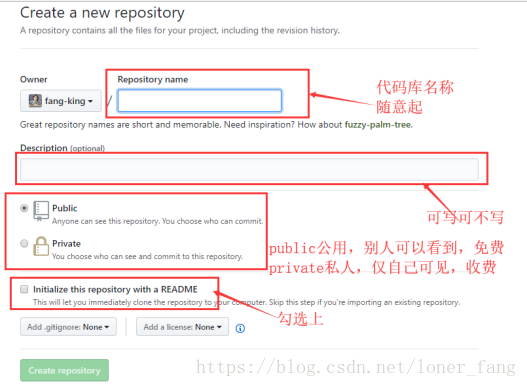
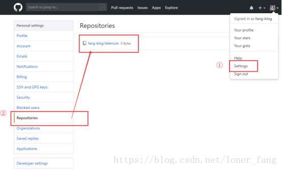
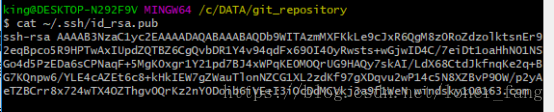
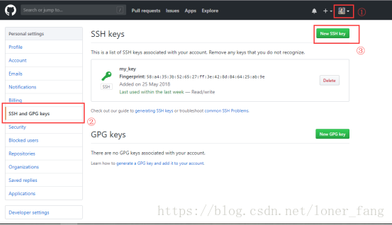
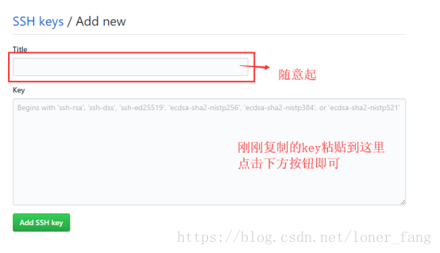
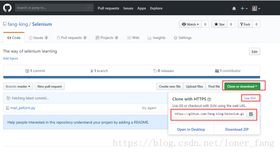
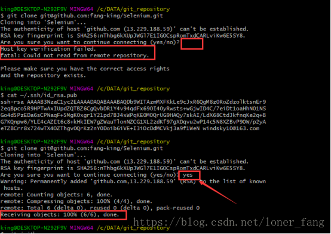
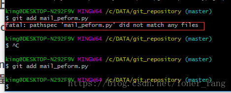
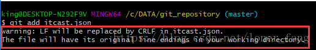

一、新建代码库
注册好github登录后，首先先在网页上新建代码库。
点击右上角“＋”→New repository
进入如下页面：按照要求填写完成后，点击按钮创建代码库创建成功。
接下来我们查看一下刚刚创建好的代码库，点击右上角的头像→Settings→左侧菜单栏Repositories菜单，可查看到刚刚新建好的代码库。
二、添加SSH公钥
为了把本地的仓库传到github，还需要配置ssh key，说白了就是为了把本地的代码上传到github。
1、前置准备
本地需要安装git：https://git-scm.com/download/。安装成功后本地右键鼠标会多出一些git选项。
在本地创建仓库，随便找一个盘新建一个文件夹作为本地仓库，文件夹名称随意，新建好后留着后续使用。
2、添加SSH Key
首先在本地创建ssh key。在刚刚新建好的文件夹内点击右键Git Bash Here进入git命令行。
ssh-keygen -t rsa -C "your_email@163.com"
“your_email@163.com”改成自己注册github时的邮箱，此处不一定要用163邮箱。回车之后会要求确认路径和输入密码，直接一路回车就行。成功的话会在~/下生成.ssh文件夹，进去打开id_rsa.pub，复制里面的key。
cat ~/.ssh/id_rsa.pub
直接在命令行内输入上面的代码，就会出现key，右键复制key。
复制好后回到网页，点击右上角的setting，左侧菜单切换到SSH and GPG keys，点击New SSH key。默认是没有SSH key的，下方的my_key是我之前添加的。
点击New SSH key后，会出现如下页面：
为了验证是否成功，在git bash下输入：
ssh -T git@github.com
如果是第一次的会提示是否continue，输入yes就会看到：You’ve successfully authenticated, but GitHub does not provide shell access 。这就表示已成功连上github了。
三、把本地仓库传到github
初次使用首先需要做一些初始化的工作：
将github上的代码库克隆到本地
git clone git@github.com:fang-king/Selenium.git
克隆成功的话在新建的文件夹内会有一个和github上的代码库重名的一个文件夹。
在git命令行内输入以下代码：引号内的填写你注册github时的用户名和密码。
git config --global user.name "your name"
git config --global user.email "your_email@163.com"
还是在之前新建的文件夹内，右键git bash here，添加远程地址：
git remote add origin git@github.com:fang-king/Selenium.git
git remote add origin 固定，后面的内容是复制网页上的ssh粘贴上去的

接下来就要通过git将代码上传至远程服务器了。
先使用git init 初始化仓库
git add mail_peform.py 添加文件到本地库，也可以添加所有文件 git add .( .前有一个空格)，add后的mail_peform.py是你要上传的那个文件
git commit -m “try again” 提交文件到本地库，-m后面是提交注释的内容
git remote add origin git@github.com:fang-king/Selenium.git 关联远程github上刚创建的库
git push -u origin master -f 将刚刚添加的文件push到github。
刷新GitHub界面 看到刚刚添加的文件
四、后续上传代码步骤
git init 将文件夹设置为本地仓库，只有这样才可以把本地的文件传入github仓库
git remote add origin git@github.com:fang-king/Selenium.git 将本地仓库与github仓库进行关联
git pull origin master 将GitHub上仓库的内容pull到本地仓库，两者保持一致
git add 需要上传的文件 添加文件到本地库
git commit -m “try again” 提交文件到本地库
git push origin master 上传文件
如果要上传的文件是在一个新的文件夹里，那么就需要执行前3步，将新文件夹作为本地仓库与github关联；
如果要上传的文件是在之前的文件夹里，那么之前已经关联过了，只需要直接执行后3步就可以了。
五、删除远程仓库里的文件
进入本地仓库：
git pull origin master 本地同步远程仓库，将远程仓库里的内容拉下来
git rm -r --cached 文件名 删除文件
git commit -m “delete dir” 提交并添加说明
git push origin master 将本次更改更新到github项目上去
六、遇到的问题
将github上的代码库克隆到本地的时候遇到报错，原因是没有输入yes，由于之前一直一路回车，就以为克隆的时候也是一直回车即可，然后就报错了。

在add一个文件的时候总是出现如下警告，看着会不舒服。在命令行使用git config --global core.autocrlf false来禁用自动转换 ，就不会出现下方的警告了。
